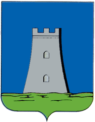
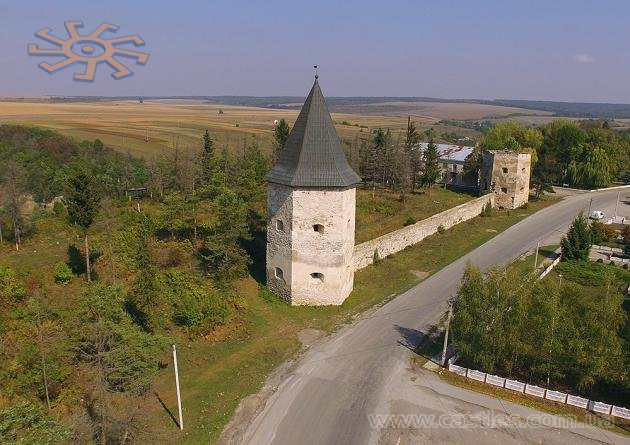
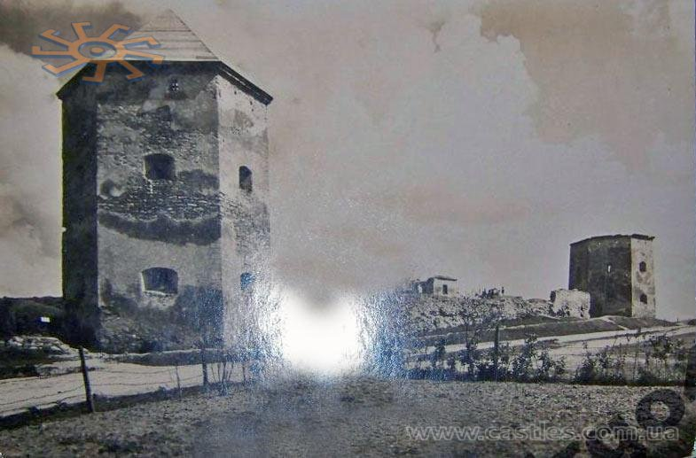
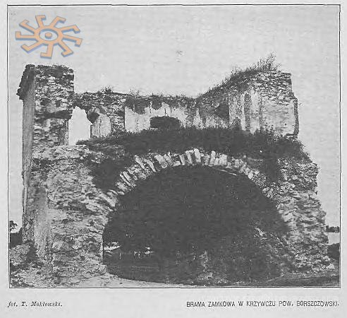
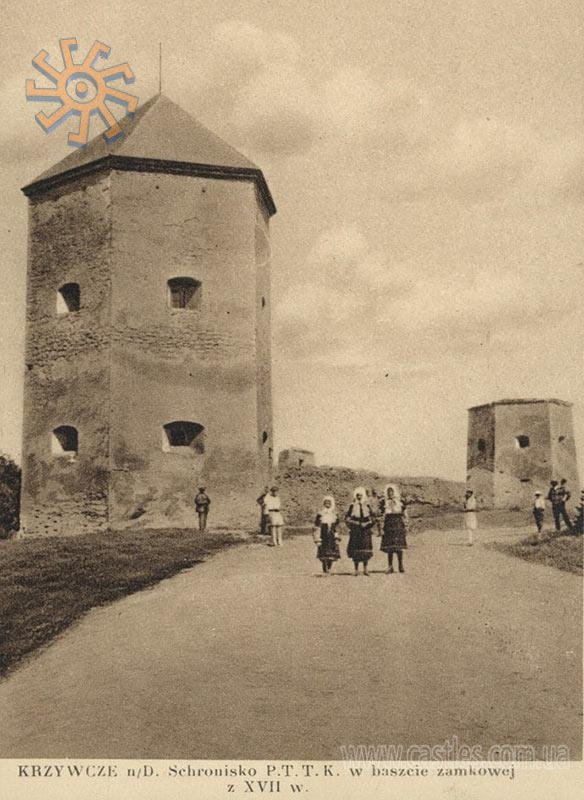
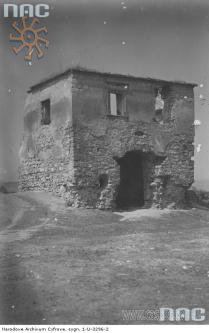
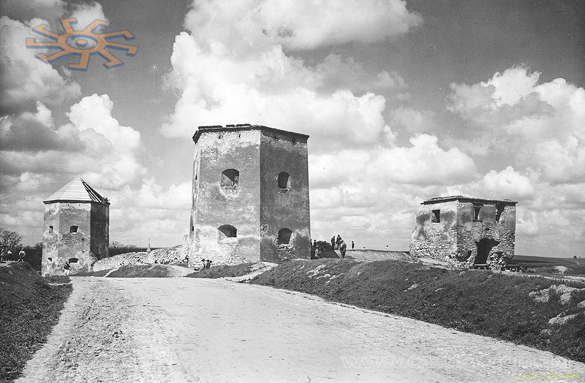
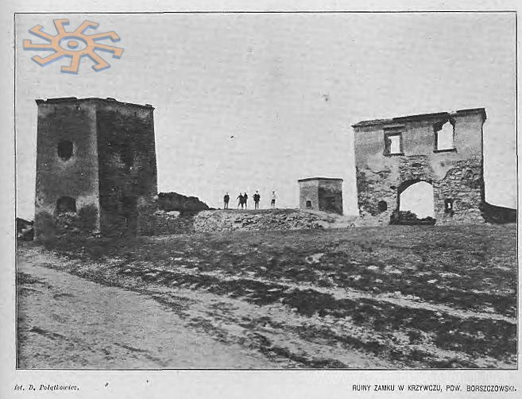
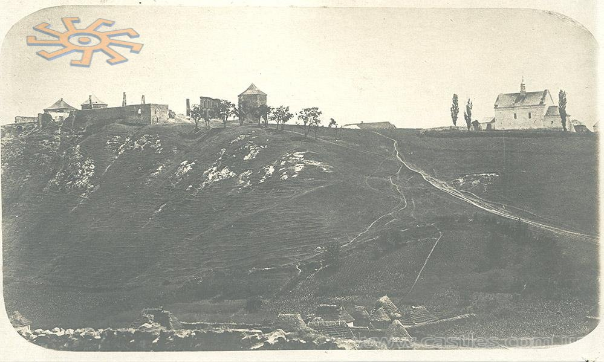

Замок Контських
 Про Кривче треба знати наступне: село, зараз єдине, поділяється на дві колись окремі частині: Кривче Нижнє (Долішнє) і Кривче Верхнє (Горішнє). За замком - в верхню частину поселення (це елементарно, мої ватсони, але раптом хтось не здогадався?). Шукати нічого не доведеться: замок знаходиться при трасі в самісенькому центрі села. Оборонний замок в Кривчому було збудовано 1639 р. тодішніми власниками Контськими (Kontski) у формі прямокутника з чотирма баштами по кутах, з арсеналом та в‘їздною брамою. Не дивлячись на досконало вибране місце (замок розташовано на високому пагорбі над рікою Циганкою) фортецю неодноразово брали татари і турки. Відомо, що в липні 1648 р. козацькі війська вигнали з замку польський гарнізон. У 1672 р. турецький султан Магомет ІV, повертаючись з Бучачу після підписання договору з Польщею, захопив замок і перебував тут певний час зі своїм військом. 1675 року Ян ІІ Собеський наказав обложити твердиню. Під час облоги оборонні споруди зазнали значних пошкоджень. В тому ж році в зруйнованій фортеці засів польський зрадник Кричинський з загоном липків (татар). Пізніше, в 1687 р., вже татарські загони взяли в облогу поляків. Кривчанський замок був важливим стратегічним пунктом у воєнних діях Польщі проти Туреччини. У XVIII ст., коли життя стало спокійнішим, відпала загроза нападу татар і турків, замок відреставрували. До середини ХІХ ст. він служив за житло і був власністю Гойовських (за іншими даними Голейовських). Масової руйнації фортеця зазнала у ІІ пол. ХІХ ст., коли вона перейшла у руки Л. Зейдмана. Камінь з північної, західної, східної стін і з двох веж розібрали для будівництва винокурні і житлових будинків. У 1892 р. польський дослідник та краєзнавець Олександр Чоловський ще бачив фундаменти від розібраних стін і веж. Ця інформація дещо суперечить кадру з польського національного архіву Polona.pl. Кадр датований початком ХХ ст., а саме часом до Першої світової війни - і на ньому виразно видно і три башти (з дахами!), і реально великі фрагменти мурів, і стіни замкових споруд (вже у стані руїни). Можливо, фото було датовано помилково - і це не початок ХХ століття, а таки кінець ХІХ-го. Друга спроба реставрації замку була зроблена у 1920-х рр. Подільським туристично-краєзнавчим товариством. На той час відновили одну башту, в якій обладнали кілька приміщень на зимовий і літній періоди для туристів - своєрідну турбазу. З фундаментів зруйнованих стін і веж місцеві жителі повибирали весь камінь на господарські потреби. Не дарма росіяни кажуть, що на халяву і оцет солодкий.





 |